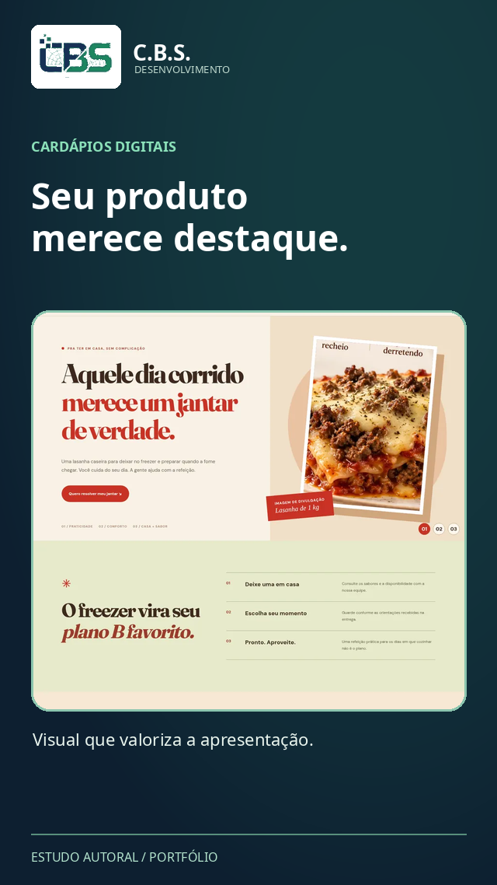

Vitrine Express
Uma página de apresentação simples, clara e responsiva para mostrar o seu negócio.
R$ 790Valor inicial estimado, sujeito a briefing
Ver detalhes e condições ↗Tecnologia + criação + negócios
Desenvolvemos sites, landing pages, catálogos e conceitos publicitários assistidos por IA. Com criatividade, clareza e processos verificáveis.

Serviços bem definidos e orçamento conforme o escopo. Cada opção abre uma página com mais informações.
Uma página de apresentação simples, clara e responsiva para mostrar o seu negócio.
Uma vitrine digital organizada por categorias para apresentar alimentos, preços e formas de contato.
Para empresas que precisam de mais páginas, estrutura própria ou integrações específicas.
Estudos próprios identificados como demonstrativos. Nenhum deles é apresentado como contrato de cliente.


Estudo de estrutura comercial, navegação e leitura em dispositivos móveis.
Conhecer projeto ↗Além do desenvolvimento, reunimos peças de anúncio, imagens para catálogos, vídeo curto e estudos de apresentação. Personagens virtuais estão em preparação e serão identificados como conteúdo sintético.
Conhecer a galeria ↗
De aplicativos a automações e conteúdos audiovisuais, com escopo definido por projeto.
Prototipação, desenvolvimento e manutenção de soluções para pessoas e empresas. Escopo, testes de dispositivo, integrações e publicação avaliados individualmente.
Conhecer serviço ↗Integrações e rotinas de baixo risco, com revisão de permissões, segurança, custos e possibilidade de desligamento.
Conhecer serviço ↗Conceitos de personagens digitais fictícios, imagens e aplicações publicitárias assistidas por IA; entregas dependem de consistência e autorização de uso.
Conhecer serviço ↗Imagens, vídeos curtos, motion graphics, edição e apresentações de produto com materiais autorizados.
Conhecer serviço ↗Apresentação demonstrativa animada a partir de código, combinando uma captura real da tela de acesso de QA com interfaces ilustrativas de corridas, Social e Marketplace.
Apresentação completa ↗Vídeo de portfólio. Ilustrações não equivalem a telas reais da versão publicada.